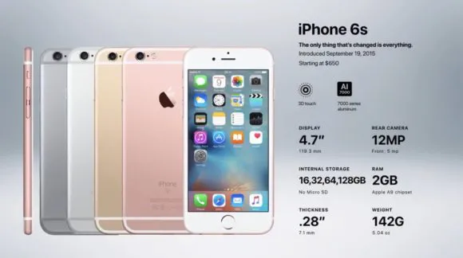
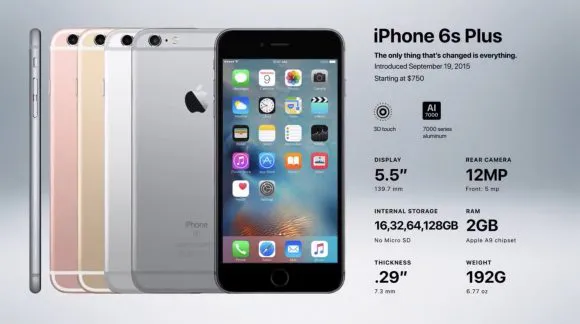

Generation 9: iPhone 6S and iPhone 6S Plus
Release Date: September 25, 2015
The iPhone 6S and 6S Plus are minor updates to the iPhone 6 and 6 Plus, but they offer significant improvements to performance and user experience. The only difference between the 6S and 6S Plus is the size, with the 6S being larger. The iPhone 6S and 6S Plus have a new A9 processor that is 70% faster than the A8 processor in the iPhone 6 and 6 Plus. They also have a new 3D Touch feature that allows users to interact with the screen in a more intuitive way. Additionally, they have a new 12-megapixel camera with improved image quality. Finally, they run on the new iOS 9 operating system, which has new features and improvements. Overall, the iPhone 6S and 6S Plus are significant upgrades over the iPhone 6 and 6 Plus, and they offer a better overall user experience.
 Specification: 6s
- A 12-megapixel camera (up from 8) capable of recording videos in 4K
- A 12-megapixel camera (up from 8) capable of recording videos in 4K
- An Apple A9, dual-core, 64-bit processor with 2 GB RAM (up from 1 GB)
- An M9 Motion Coprocessor
- iOS 9
- Bluetooth 4.2
Specification: 6s
- 14/24 hours talk time on 3G
- 10/12 hours of web browsing time on 3G
- 10/12 hours of web browsing time on LTE
- 11/12 hours of battery life on WiFi
- 11/14 hours of battery life for videos
- 50/80 hours of battery life for just music
iPhone 6s Sales
The iPhone 6S was a very successful phone for Apple. It sold very well and broke the company's record for first weekend sales. However, some people believe that it was also a turning point in Apple's history. They argue that it became harder for Apple to achieve explosive growth after the iPhone 6S, as competition increased and it became more difficult to come up with new features that people really wanted. Nevertheless, the iPhone remained Apple's core product, and subsequent versions of the phone continued to be popular.